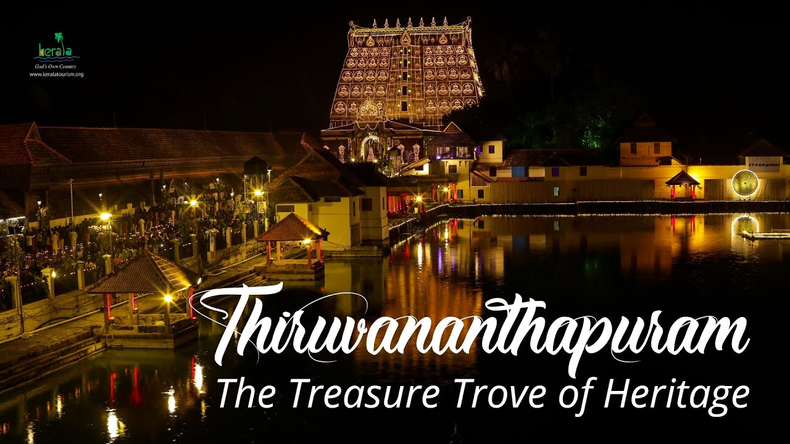
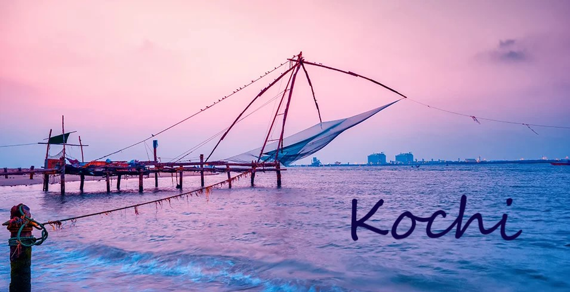
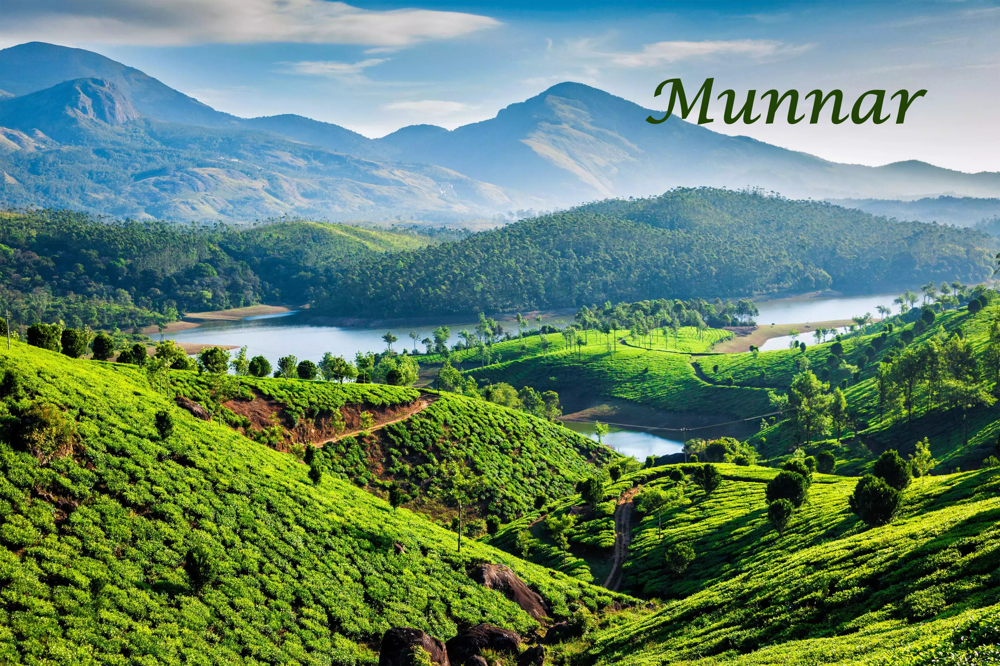

Kerala,a state in the southwest corner of India,is a must-travel place with many popular tourist attractions,including
a range of elaborate temples.Its tropical beauty, relaxing beaches and native villages attract travelers from
across the world who seek a fully refreshing vacation. Apart from its breath-taking and splendid scenery,
Kerala is also known for its rich wildlife.Despite Kerala being one of the smallest states of India in terms of
area,it flourishs in a wide variety of cultures and cuisine.

Thiruvananthapuram,earlier known as Trivandrum,is the capital of Kerala making it also the most populated
city.With its pleasant climate,rich history and natural beauty, Thiruvananthapuram offers a perfect blend of
tradition and modern architecture.This city offers a delicious cuisine experience with its unique blend of
flavors and spices.Thiruvananthapuram is also the birthplace of Carnatic music and has produced many
renowned Carnatic musicians.The city is filled with beautiful parks, such as the Kanakakunnu Palace
Grounds and the Shangumugham Beach Park, offering perfect places for relaxation of the whole family.
To know about Sree Padmanabhaswamy Temple Click Here
To know about Kerala State Science & Technology Museum & Priyadarsini Planetarium
Click Here
To know about Kovalam Beach Click Here Back to top

Kochi (also known as Cochin) is a flourishing port city showcasing a rich
blend of mesmerising natural beauty and vibrant culture.Kochi has a rich and diverse cultural heritage influenced by
various civilizations including Chinese, Dutch, Portuguese, and British.These influences are evident in the
city’s architecture, cuisine, and traditions so travellers would feel like home wherever they are.Kochi has
numerous historical landmarks, including the Dutch Palace.
Kochi is known for its vibrant festivals, with the Kochi Carnival being one of the most popular.This annual
event, held during the Christmas and New Year season, features colorful parades, music, and dance.

If you're looking for rolling hills, scenic valleys, numerous streams, huge splashy waterfalls, sprawling tea plantations
and winding walkways then your search has come to an end.Munnar is a town in the Western Ghats mountain range in India’s Kerala
state. The best time to visit Munnar would be autumn from September to November and winters from December to March when the
weather is really pleasant. One can witness the blooming of Neelakurinji, a rare plant which flowers only once in twelve years, in the
autumn months and in winters.One can enjoy adventures like trekking and rock climbing very comfortably.
 Kerala,a state in the southwest corner of India,is a must-travel place with many popular tourist attractions,including
a range of elaborate temples.Its tropical beauty, relaxing beaches and native villages attract travelers from
across the world who seek a fully refreshing vacation. Apart from its breath-taking and splendid scenery,
Kerala is also known for its rich wildlife.Despite Kerala being one of the smallest states of India in terms of
area,it flourishs in a wide variety of cultures and cuisine.
Kerala,a state in the southwest corner of India,is a must-travel place with many popular tourist attractions,including
a range of elaborate temples.Its tropical beauty, relaxing beaches and native villages attract travelers from
across the world who seek a fully refreshing vacation. Apart from its breath-taking and splendid scenery,
Kerala is also known for its rich wildlife.Despite Kerala being one of the smallest states of India in terms of
area,it flourishs in a wide variety of cultures and cuisine.